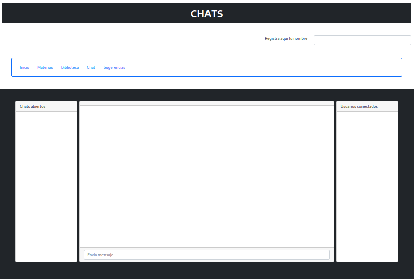
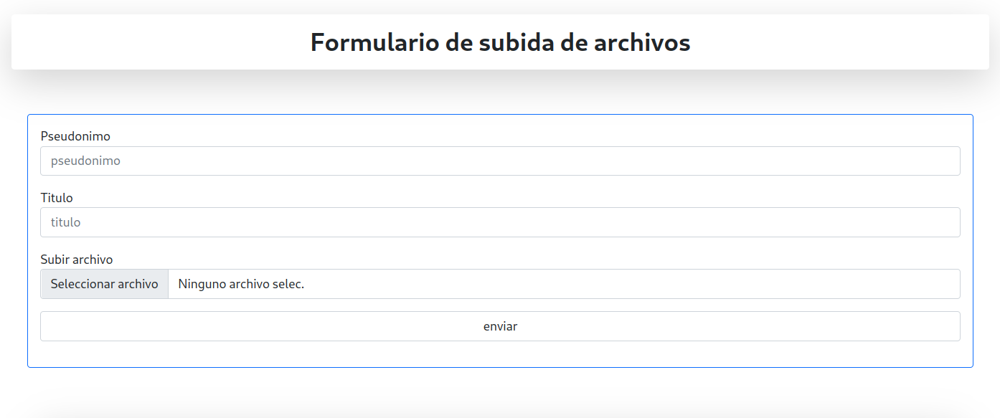

Informacioncienciaytecnologialibre es una plataforma que pretende formar una comunidad con libertad de expresión para escribir sobre cualquier tema, texto, artículo, noticia, conocimiento u opiniones subjetivas o peticiones de información que puedan resolver otros integrantes de la comunidad; con posibilidad de debate a través de comentarios y/o chat.
Si te consideras un Blogger, redactor, escritor, economista, abogado, desarrollador de software, community manager, social media manager o sencillamente un entusiasta del mundo de la información , ciencia o tecnología, que quiere crear contenido libre de represión en esta plataforma digital. Esta es tu oportunidad. Y aunque puedes firmar tu artículo, tambien tienes la opción de escribir de forma totarmente anónima o con pseudónimo.
La principal norma es el respeto mutuo a todas las opiniones. Además es necesario seguir unas simples recomendaciones para subida de los archivos a publicar.
Cualquier persona puede publicar de forma completamente gratuita, anónima, sin que le pidan ningún tipo de registro o información, más allá de la que desea aportar o preguntar.
Para publicar simplemente hay que rellenar el formulario que aparece en la imagen, facilitando un título y la subida del archivo a publicar. El nombre del archivo debe coincidir con el del título publicado.
Una vez publicado, como decimos cualquier persona, sin registro alguno podra debatirlo mediante comentarios habilitados a tal efecto, o a través del chat, siguiendo como siempre la principal norma, que es el respeto para todas las opiniones.
Todos los temas se pueden consultar en la Biblioteca, donde se encuentra todo lo publicado, y para cada texto pulicado existe un formulario para hacer los comentarios mencionados.
En la plataforma disponeis de un espacio de sugerencias para sugerir cualquier cosa, que haremos lo que podamos.